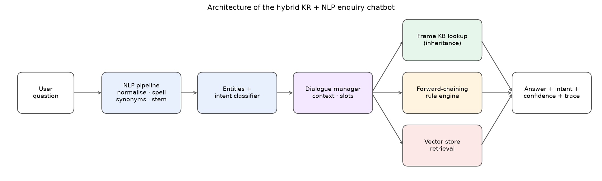

M.Tech · Fundamentals of Artificial Intelligence · Mini project (topic 29)
An enquiry chatbot for the fictional Greenfield University, built with Knowledge Representation + NLP. There is no large language model inside. Every answer comes from a knowledge base or a rule, so it can always be explained.
is_a

You can re-run the test sets in your browser on the test page. All university data is made up for this project.